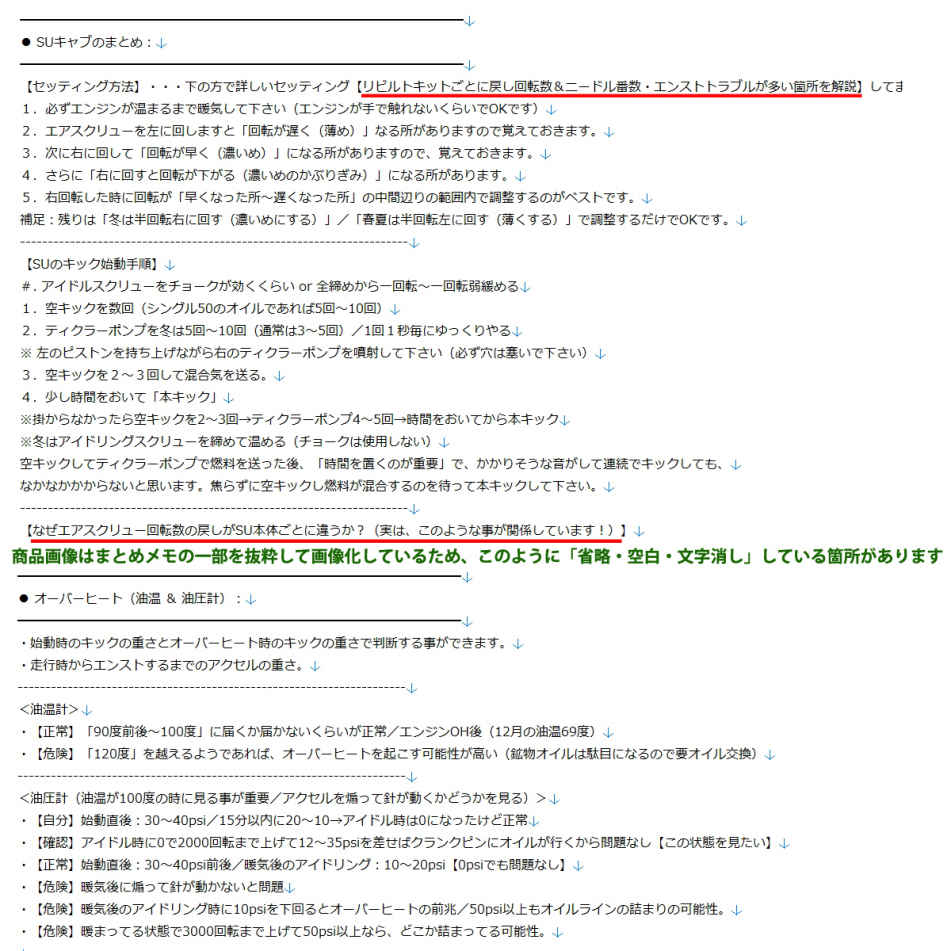
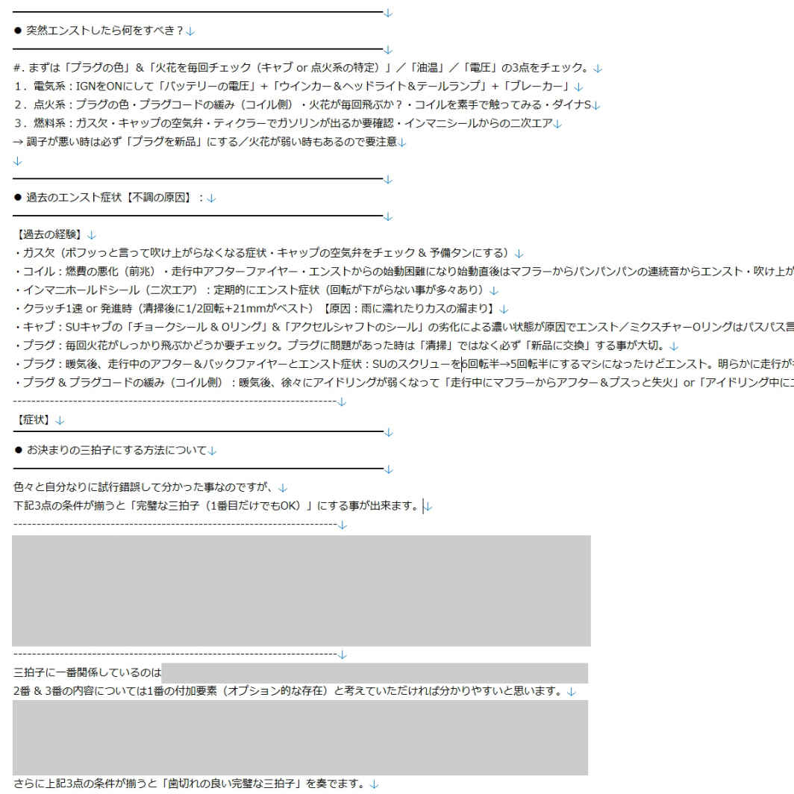
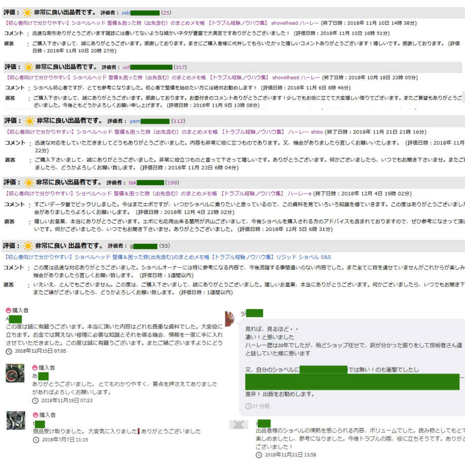

| 【初心者に分かりやすい】ショベルヘッド 整備 ＆ 困った時（出先含む）のまとめメモ帳+おまけ特典あり【ハーレー メンテナンスブック 本 整備書】: スポーツスター・エボリューション・ツインカム（TC88・TC96）・パンヘッドにも！ | |
| ショベル大好きおじさん | |
| (2018) | |
まとめメモ帳（無料サンプル） 
 
ご挨拶 & 販売に至った経緯について
この度は、ご覧頂きまして、誠にありがとうございます。何らかのご縁で、当方の商品へアクセスして頂いた事に心より感謝しております。ご購入して頂ける方には誠心誠意な気持ちで全てをお伝えしたいと思いましたので、どうしても長文になってしまいました。誠に申し訳なく思うのですが、お時間がございましたら最後までお付き合い頂けると嬉しいです。
まとめメモ帳は パソコン＆スマートフォンからご覧になって頂く事が出来ます （見方の手順を分かりやすく解説させて頂いておりますので機械に不慣れな方も心配不要ですので、ご安心下さいませ）
● 最新のお知らせ（ショベルまとめメモ帳の更新履歴）
※ メモ内容の更新した箇所をリアルタイムでご確認して頂くことが出来るようになりました！
当方の周りでは旧車に乗っている方が誰一人おらず頼れる環境もなく、一度もバイク整備の経験がない状況にも関わらず、初めてショベルヘッドを購入した経緯がございました。
納車で喜んでいたのもつかのま、すぐにエンスト症状に陥り、乗る度に何かとトラブルが発生していたため、色々なショップでお世話になっては修理待ちという繰り返しで、修理が完了しても、きちんと直してもらえず、気になる箇所があっても「旧車はこんなものですよ（個体差がありますよ）」という簡単な言葉で対応されてきました（このようにショップで言われている方は要注意です！）
このように、きちんと直してもらえずに「何度ショベルを手放そうと思った事か数知れません...（それでも乗っていて楽しいんですよね）」これから乗っていて楽しいショベルを手に入れる方には同じような大変つらく酷い経験をしてもらいたくないと思いまして出品に至りました。
何も知らずにショベルを購入してしまう と" 無駄にお金と時間だけを費やす事になってしまいま す" ので、私と同じ被害に遭わないためにも今まで経験したノウハウや真実を知ってもらいたいと思っています。ぜひ皆様には１つの参考にしてもらいたいので最初 の1 年だけで掛かった総費用（ショップの修理工 賃+ 購入したパーツ代）を公 開+ 他にも過去に経験した全トラブル集（濃い内容）を公開しております。
当方では何事も形から入るタイプなのでショベルを購入する前には意気込んでトラブルの事前対策として、これまで色々とハーレー旧車やショベル関連のメンテナンス本を購入してきたのですが、どれも素人だった私にはチンプンカンプンで全然意味が分かりませんでした。さっぱり理解する事が出来ず、このザマでした...（これまで購入した本一覧：ショベルヘッド マスターブック、トラブルシューティングハンドブック、メンテナンスブック、ファーストエイドブック 、 F L ファイル、ショベルヘッドファイル、タメさんのハーレーメカ談義、ジンギーズマニュアル２冊、ハーレーダビッドソンエボリューションレスキュ ー& メンテナンス）
きっと同じように苦労されている方もいるのではないか？と思いまして、当方のまとめ内容は、ショベルの弱点を克服するための事前対策を含めて、一度も整備をした経験がない初心者の方でも理解できるように専門用語を一切使わずに分かりやすくまとめています（当方のまとめメモで事前に知識をつけておく事により、ショベルの事だけにとどまらず、旧車ショップ業界の事や購入価格相場・適正の平均工賃を知る事が出来て悪質なショップに騙されないと同時に何よりもトラブルに遭った時に焦らずに落ち着いて対処できる力が備わり理解力が深まります！）
ハーレー旧車の修理業界と言いますのは、腕が良い所になると修理が完了するまでの「待ち時間」が、とてつもなく長いです。簡単な作業ですら後回しにされて「１ヶ月待ち」なんて、ザラです。特に腕の良い所になると何年も待ち続けなければいけません。せっかちな自分には、これが非常に辛かったです。この時、初めて一般常識が通用しないのだな...とショックを受けたと同時に痛感させられました。（乗る度にすぐ壊れる・修理は長期間待つ・工賃は高くて、きちんと直ってないの三拍子です）
色々なショップをハシゴしてはお世話になりつつ、私自身まったく整備経験がなかったのですが、重い腰をあげて（元々バッテリー交換すら分からず、整備は全てショップに丸投げのお任せ状態）だったのにも関わらず、なぜだか自分で整備をするようになりまして（ガレージなしのカバー保管ですが炎天下の中で整備出来てます！）、白黒つけたい細かい性格なので、トラブルが遭う度に徹底的に内容を調べて「まとめたメモ帳」になります。ショベルの弱点克服から対策部品まで安心して乗れるように全てテキスト文字のみでの解説になりますが、プラグ交換すら経験した事がない方に対しても分かりやすく項目ごとに箇条書きにてまとめてあります。
おすすめパーツを例で言いますと「バッテリーは平
均2
年頻度で交換」になりますが、冬でも安定して掛かりやす
く5
年以上持つバッテリーのメーカーや品番のご紹介等になります。古いバイク（特にハーレー）というのは最初に掛かる車体の購入費用のみならず、何かと購入した後の"維持費用が掛かります（意外と皆様忘れがちです）"ので、その辺のコストパフォーマンス（品質 x
費用面）も、きちんとトータルバランスを考慮した上で、ショベルの弱点を克服して・壊れづらく耐久性が良く・日々のトラブルを回避するために安心しておすすめできる部品を個別にご紹介させて頂いております。
当方では、これまで購入した消耗パーツやショップの工賃内訳を日付と共に毎回メモに記録して購入してから現在までの総費用は合計いくら掛かったのか？＆各部品のメンテナンス交換日（タイヤの空気を入れた日も数値と共に記録）して把握しているくらい細かい性格なので、いかに費用を安く抑えてショベルを維持するか？を常に考えておりまして、その辺も得意としている分野で、きちんと考慮してありますので、ご安心下さいませ。
● このような方にオススメです！
・ショベルに乗る度に不安な方・弱点を克服して安心して乗りたい方
・ショベルの弱点や故障が多い箇所を知りたい方・ショベルオーナーの本音を知りたい方
・バイク整備をした経験がない方・基本的な知識がない方・基礎知識を覚えたい方
・これからショベルヘッドや旧車を購入したい方・検討中の方・購入を迷われている方
・簡単な整備＆メンテナンスをご自身で覚えたい方・知りたい方・ショベルの特性を知りたい方
・まともな旧車バイク修理専門店を探したい方（知りたい方）・ショップ探しに苦労されている方
・ショベルヘッド（リジッド含む）の価格相場・旧車の平均価格や工賃相場を知りたい方
・フルカスタムバイクの車検をご自身で受けたい方・通したい方・ユーザー車検を通すためのポイン ト& アドバイス（コツや注意点）・フルカスタム車両の保安基準まとめ・車検に必要な物・当日まで準備する物・当日の手順と流れ・掛かる総費用を詳しく解説・ユーザー車検と言います）
自分がショベルを購入した当初は整備した事が一度もなく「プラグの交換方法すら知らない・バッテリーの充電方法・テスターの使い方すら分からない素人レベルだった（トラブル経験のないインジェクションのスポーツスターに乗っていたため）」のですが、まさに、そんな方のために購入してもらいたいと同時に分かりやすくテキスト箇条書きで解説してある内容になります！
【ご購入者より嬉しいコメントを頂きました！】
・雑誌には書いてないような細かなネタが大豊富で満足です！ありがとうございました！
・ショベル初心者ですが、とても参考になりました。初心者で整備を始めたい方には絶対お勧めします！
・出品者様のショベルの情熱を感じられる内容、ボリュームでした。読み物としてもとても楽しめましたし、参考になりました。今後トラブルの際、役に立ちそうです。ありがとうございました！
・すごいデータ量でビックリしました。今はまだエボですが、いつかショベルに乗りたいと思っているので、この資料を見ていろいろ知識を得ていきます。この度はありがとうございました。また機会がありましたらよろしくお願いします。
・本当に頂いた内容はどれも貴重な資料でした。大変役に立ちます。お金では買えない修理に必要な知識とそれを得る機会、情報を一度に手に入れさせていただきました。この度は誠に有難うございます。
・この度は迅速な対応ありがとうございました。ショベルオーナーには特に参考になる内容で、今後活躍する事間違いのない内容でした。まだ全てに目を通せていませんがこれからが楽しみです。また機会がありましたら宜しくお願い致します。
これからショベルを購入される方から検討中の方・ショベルを購入したばかりの方・自分で簡単な整備をやってみたい方・ショベルに乗る度に不安で心配されている方には、絶対おすすめできる内容になっております。自分で一通りの作業を出来るようになると愛着が湧くと同時に何かトラブルが発生した際に不安がなくなり安心できるようになります（私も最初は不安な気持ちのまま乗っていました！）知識がつくと何も知らない不安な状態で乗るよりもショベルに乗っていて安心出来るようになります！そして、何よりも楽しく嬉しい気持ちになると思います！
よくショベルは壊れやすいと言われていますが、当方の整備＆困った時（出先・自宅含む）のまとめメモ帳内 容+ 全トラブル経験を把握した上で、事前にショベルの弱点さえ対策しておけば、街乗りとして普通に使えます（現に私は普段の足として使用しております！）
特に自分の場合は初歩中の初歩的な内容「バッテリーの充電方法？はどうすれば...」「プラグ交換のやり方？まずプラグコードを、どのように外すのか？締め具合・見方」「どこに何のグリスを塗ればよいのか？」といった初歩的な知識がない状態で、全然分からず、調べるのに大変苦労しました（このように細かい初歩的な解説をしているショベルの解説本はないです）「点火調整（ダイ ナS ＆ポイント・ガバナー交換）」「キャブの調整 （ S U・ C V・e キャブ ・ HSR4 2 ・ケイヒンバタフライ各種セッティング番数の情 報) 」「コイル＆レギュレーター故障した時の症状」「プッシュロッド調整」「マニホールドシールの交換 」 ...et c 。自分で出来るようになって喜びを感じると同時にショベルに乗っていても不安はなくなります（ショベルの大抵の故障原因は、点火系のポイント、コンデンサー、ダイ ナS 、イグニッションコイル、レギュレーター、キャブの原因といった事が多いです）
私はショベルヘッドのお陰で色々と知識を習得する事が出来ました！当方と同じような素人の方で、まったく知識がなく整備をした事がない方でも、ある程度は自分で出来るようになると思います。なぜなら私自身がそうだったからなのです。少なくとも当方でまとめてある内容までは整備出来るようになると思います（主にショベルの弱点＝故障＆修理が多い箇所をまとめている内容になりますので、これだけ出来れば乗っていく上では十分です）当方 は 1340c c のリジッドカスタム車両ですが、他の車両にも流用して頂けると思います！
● 01 . 整備＆困った時（出先・自宅含む）シリーズのまとめメモ帳内容
・キック始動方法のコツ（購入したばかりで掛からない方必見！キックの仕方以外にも原因があります）
・エンジンの掛け方（冬に掛かりが悪い方の対策方法・真冬でも、すぐにエンジンをかける方法）
・エンジンが掛からない場合の対処方法（必ず原因があります！意外と簡単な事だったりもします）
・突然エンストしたら何をすべき？（いざトラブルに遭うとパニックになりますが、これを見れば安心！）
・オーバーヒートの症状（油温 ＆ 油圧計の見方を解説）
・発進時にニュートラル →1 速に入りづらい症状の解決策（３つの解決策があります）
・イグニッションキー（電源）の意味と接続先
・増し締め（定期的に各ボルトの緩みをチェックする）
・プラグの交換～見方・締め具合 & プラグコード（プラグ交換すらした事のない方にも！）
・ブレーキパッド交換（ブレーキキャリパー）、エア抜き手順・鳴き対策
・クラッチの調整＆清掃方法（ジャダーと繋がり具合を解決！）
・エンジンオイル & ミッションオイル（おすすめ鉱物油～化学合成の解説）
・バッテリー（おすすめバッテリーから充電方法含む）
・マニホールドシールの付け方（二次エア対策は心配不要になりました！）
・プッシュロッドの調整（バルブタイミング・油圧タペット・ソリッド）
・レギュレーター（故障した時の症状・調べ方）
・イグニッションコイル（故障した時の症状・調べ方）
・点火時期の調整方法（お決まりの三拍子にする方法・ケッチンをきづらくする対策～ダイ ナS ＆ポイントの両方にて細かく解説！）
・ガバナースプリング（故障した時の症状・定期メンテナンス・交換方法）
・キャブレターの各種セッティング番数 （ S U キャブ・ C V キャブ・ケイヒンバタフライ 、e キャブ、ミクニ MIKUNI HSR4 2 ）
・ S U キャブのまとめ【トラブルが多い箇所（エンスト症状が起きやす い4 箇所）＆なぜエアスクリュー回転数の戻し が S U 本体ごとに違うか？ （1 回転半 ・3 回転半・５回転半といったのには理由があります）・セッティング方法・メンテナンス方法 ・ S U キャブのキック始動手順・オーバーフローの対処方法】
・スプロケットのセッティング（加速重視 or 高速重視）
・ウインカー電球 & ウインカーリレー（よく切れる電球の対策品）
・ミッション（スローアウトベアリング）の症状
・エンジンからカンカン音（カチカチ音）の症状・原因追求・解決まで
・燃料トラブル（故障した時の症状・調べ方）
・オルタネーター（故障した時の症状・調べ方）
・各パーツの寿命年数＆壊れた時の対策品 & おすすめメーカーの消耗部品（安心して乗るため） & 部品ごとに個別に購入先をご紹介
・これまで当方が経験したショベルの全トラブル記録もお付けします！（購入時からトラブルだらけだったので手厚い内容になっています）
・安くておすすめ任意保険 & レッカー手順 & 事故時の対応まとめメモ
・初心者でも分かりやすいカスタムの配線図（画像）も希望であればお付けします！
● ダウンロード内容：
・ 01 . 【手順解説】 ショベル整備 & 困った時 【出先・自宅での対処方法】
・ 01-a . 【点火調整】 ポイント & ダイ ナS の配線から調整・交換方法・ダイ ナ 2000 i ・ガバナーの交換手順・定期メンテ方法・故障症状（ケッチンがきづらくする対策～三拍子セットアップを解説！）
・ 01-b . 【キャブ調整】 各キャブレターの基本・種類・特性・特長・調整の仕方から主なトラブル症状・セッティング情報を解説！
・ 01-c . 【クラッチ調整】 乾式クラッチの調整の仕方から交換方法・リリーシングのアルミ 製& 純正の数値・交換時期や見方・トラブル症状までを解説！
・ 01-d . 【プッシュロッド調整】 油圧タペット分解・清掃～ソリッドまで。どの解説書を見ても理解しづらいプッシュロッド調整を誰が見ても理解できるように細部にわたって分かりやすく丁寧に解説してます！（調整するタイミングは動画有り）
・ 01-e . 【オイルまとめ】 エンジンオイル & ミッションオイル（オイルの基本・種類・特性・特長・役割・カスタムタンクに入れる量・使用期限・ショベル に 20W5 0 はどうなのか？鉱物油と化学合成油の違い ・ 10 0 度の時の硬さ・ショベルに良いオイルの銘柄をまとめています！ ） .txt
→ 上 記6 点だけでも原稿サイズに算出する と 10 0 ページ分のボリュームになります（それだけの実体験ノウハウを収録で大変お買い得です！）
・ 02 . 【購入】 ショベルの弱点を克服する壊れた時のおすすめ消耗部品一 覧+ 購入先リスト & 各パーツの交換目安（寿命年数）
・ 03 . 【テスター】 テスターの使い方・電気＆配線の基本（各消耗パーツの点検方法 ） .txt
・ 04 . 【トラブル】 実体験によるショベルの全トラブル集（一歩遅ければ車両全焼の小火騒ぎからエンジントラブルまで経験！）
・ 04-a . 【トラブル】 エンジントラブルの修理内容（購入し て1 年以内に腰 上 O Hを2 回もするはめに・・・）・ショベルエンジン内のオイルの流れを解説・ガスケット抜けの症状・オイル下がり・オイル上がりの症状 ・ 4s t エンジンの仕組み）
・ 05 . 【出先】 外出時の携帯工具一覧 & 持っていると安心の携帯予備パーツ
・ 06 . 【保険選び】安くておすすめの任意保険 & レッカー手順（無料） & 事故時の対応まとめメモ
・ 07 . 【お店選び】 信頼できるバイク屋さん選び（購入 o r 修理先）を探す大切なポイント＆アドバイス・維持していく上で大切な事・古いバイク（旧車）を購入する際の注意点・教訓・確認ポイント・購入する際の確認ポイント・どんな状態がオススメ？・古いバイクのメリット・デメリット・自分がショベルを購入して分かった大切な事とは？（ショップへの質問 集& 雛形メール有り）
・ 07-a . 【年式選び】ショベルヘッド （ 1340c c ）は年式によって違う乗り心地を解説・ショベルを購入するなら何年式が良い？（年式別にアドバイス）・エボのおすすめ年 式 .
・ 07-b . 【適正価格表】 旧車専門店の適正な工賃相場（騙されないための参考価格表）・フルカスタム費用の平均相場（各有名店へ見積もりした平均を元に算出）・最初 の1 年だけで掛かった総費用を公開（ショップの修理 代& 自分で購入したパーツ代）
・ 07-c . 【キャブ選び】 どんなキャブを選べば良いの？（乗る用途に合わせたキャブレター選びを解説）・エアクリーナー交換時のセッティングの必要性を解説
・ 07-d . 【マフラー選び】 どんなマフラ ー& サイレンサー（インナーサイレンサー含む）を選べば良いの？（各マフラーの基本・種類・特性・特長・音質・音量の違い・三拍子に強いマフラーからセッティング・住宅街のご近所迷惑を考慮した場合の選択肢を解説しております）
・ 07-e . 【良質ショップまとめ】 全国の技術力がある良質ショップまとめ（購入＆修理先）・全国の対応エリア：神奈川・東京・埼玉・群馬・千葉・山梨・愛知・大阪・兵庫・広島・滋賀・香川・福岡になります
・ 08 . 【車検証】 リジッド規制の解説（車検証の車名ハーレーは車検に通るか問題）・車検証の見方＆意味について・車両エンジンの年式判別方法
・ 09 . 【合 計2 万も掛からない車検を受ける（保安基準）】 【 6 P 】ご自身でユーザー車検を通すためのポイン ト& アドバイス（コツや注意点）・フルカスタム車両の保安基準まとめ・車検に必要な物・当日まで準備する物・当日の手順と流れ・掛かる総費用を詳しく解説・大型バイクの名義変更＆一時抹消手順方法
・ 10 . 【グリス & メンテ用品の使用箇所まとめ】パーツクリーナー・シリコングリス・万能グリス・グリースメイト・シリコンスプレー・ク レ 55 6 ・メンテルーブ・ラスペネ・シリコンオフ・接点復活剤
----------------------------------------------------------------------
・ etc. 整備不良による違反切符一覧・サイドナンバー問題・交通取り締まり情報・バイク駐車場所一覧のまとめ
・ etc. 定期メンテナンス記録用の雛形テンプレート（ぜひ愛車にご活用下さい）
・ etc. 初心者でも分かりやすい配線図（キッ ク ONL Y 用）
とても重要な事なので何度も繰り返しになってしまい大変恐縮なのですが、
購入当初は、バイクの知識は全然なく素人レベルでプラグ交換すら出来なく（プラグコードをどのように外すのか？すら分からないレベル）だったので、いつもバイク屋さんに修理をお願いしては、きちんと直してもらえず気になる箇所があっても「旧車はこんなものですよ（個体差がありますよ）」という言葉で対応されていました（このようにショップに言われている方は要注意です！）
このようにきちんと直してもらえずに「何度ショベルを手放そうと思った事か数知れません...（それでも乗っていて楽しいんですよね）」これから乗っていて楽しいショベルを手に入れる方には同じような大変つらい経験をしてもらいたくない（何も知らずにショベルを購入すると私と同じよう に" 無駄にお金と時間だけを費やす事になりますので要注意で す "
当方でも事前対策として車両購入前に意気込んで、いくつか有名のショベル関連メンテナンス本を購入したのですが、素人にはさっぱり理解出来ず、このザマでした...）ので、当方のまとめは、ショベルの弱点を克服するための事前対策を含めて、一度も整備をした経験がない初心者の方でも理解できるように専門用語を一切使わずに分かりやすくまとめています（当方のまとめメモで事前に知識をつけておく事により、悪質なショップに騙されないと同時にトラブルに遭った時に焦らずに理解が深まります）
ハーレー旧車の修理業界と言いますのは、特に腕が良い所になると修理するまでの「待ち時間」が、とてつもなく長いです。簡単な作業ですら後回しにされて「１ヶ月待ち」なんて、ザラです。腕の良い所になると何年も待ち続けなければいけません。せっかちな自分には、これが非常に辛かったです。一般的な常識が通用しないのだな...と痛感させられました。（すぐ壊れる・修理は長期間待つ・工賃は高くて、きちんと直ってないの三拍子です）
これらの問題を解決できるお店を探すまで、本当に"お金と時間"を掛けすぎてしまいました。これからショベルヘッドを楽しみ方には同じ被害に遭ってほしくないため、購入者のみの特典になります。
もちろん、直接紹介ではなく旧車バイク屋さん選び（修理先）の大切なポイント＆アドバイスを含んでおりますので、ぜひ当方のノウハウ内容（良質ショッ プ o r 修理先を見極めるための質問集もまとめてあります）を参考にして頂いて直接ショップへ質問をしていただければ良いショップを見つけられると思います（少なくとも悪質なボッタクリ店を見分けられるようにはなると思います）
私はショベルヘッドのお陰で色々と知識を習得する事が出来ました！当方と同じような素人の方で、まったく知識がなく整備をした事がない方でも、ある程度は自分で出来るようになると思います。なぜなら私自身がそうだったからなのです。少なくとも当方でまとめてある内容までは整備出来るようになると思います（主にショベルの弱点＝故障＆修理が多い箇所をまとめている内容になりますので、これだけ出来れば乗っていく上では十分です）当方 は 1340c c のリジッドカスタム車両ですが、他の車両にも流用して頂けると思います！
他にもフルカスタムされたショベルリジッド（パン以前の旧車にも対応）で「ユーザー車検を受けられる方」には陸運局で車検を通すためのポイン ト& アドバイス（注意点）・リジッド規制の解説（車名ハーレーのリジッド問題）・車両の年式判別方 法 .tx t を含まれておりますので、サイドナンバー問題・オープンベルトのカバーは必要？・ウインカー有無の年式や大きさ・幅の問題・マフラー音量規制・ミラー 等 ...et c 。詳しく個別に解説しておりますので車検に通るかどうか？お悩みの方にもご自身で車検を受けられる際の参考にして頂けると思います！（ショップへ依頼する際の車検価格もありますので、ぜひ参考にして頂けると思います）
多少内容は異なるのですが、パンヘッド以前の車両・エボリューション（ソフテイル・ダイナ・ローライダー）・ツインカム・スポーツスター・ロードホッパー・国産旧車やキャブ車に乗っている方・ハーレー全般の車両（車種問わず）にも応用＆オススメできる内容だと思います。
【追記】 最初の頃 は 50 P のボリュームにも満たなかったのですが、時間がある時に臨時内容を更新＆追加をさせて頂いております。まだ信用がない当方のまとめをご購入頂ける方には少しでも満足してもらいたい気持ちがございまして、初めての方でも、いかにして分かりやすく・読みやすくするためには、どのように工夫したら良いのか？を常に考えておりまして今現在でも何度も文章を見直しまして修正を繰り返し試行錯誤しております（文章だけで伝えるためには細かい言い回しも大切ですね）
そして、新たな内容を臨時追加させて頂いておりますので現在もボリュームが増え続けております！今現在は初めての方でもキャブセッティングを簡単に出来るようにするための解説を考えていたり、私自身が未導入で大変恐縮なのですが、いつか導入するためにダイ ナ 2000 i （デジタル点火 ） +P C プログラムキットの設定をまとめています。画像なんかも追加した方がいいのではないか？と考え始めたりもしています。
【 Ne w 】文章による解説がメインになりますが、皆様に大好評なので画像を追加してみました！画像のみならず！プッシュロッド（油圧タペット不良）＝異音時の音声データも追加しております！
まだ画像は「各名称 & 簡単な箇所の解説」になりますので、現時点ではおまけ程度と考え頂けると嬉しいです。今後の反響次第で手順解説を考えており、一度でもご購入頂いた方は半永久的に見れますので、ご安心下さい（最初に購入した方でも損をされないように当方更新の文章が連動して反映される仕組みにしています）
【重要】一度でもご購入頂いた方には感謝の気持ちを込めて追加＆更新された内容が半永久的に見れるようにしております！ これには個人的な想いがございまして、最初の頃にご購入された方でも損をされないよう平等にしたい考えがございまして、その辺も考慮させて頂きまして更新が自動連動して反映される仕組みにしておりますので、ご安心下さいませ。※ テキストごとに更 新= 保存した日付も反映されますので、分かりやすいと思います。
皆様ショベルと一緒でご購入するまでが心配になされているのですが、大変有り難い事にご購入頂いた皆様には大好評で満足を頂いております。本当に感謝しております！ショベルヘッドには最新車両にはない"ドコドコ感と面白い鼓動と乗り味＆魅力"があります（もちろん最 新 F I 車両も好きです）
前置きが長くなってしまい大変恐縮なのですが、ここからが本題になります。
下記 の UR L より直接アクセスして頂ければ、ご覧になって頂くことが可能でございます。
● 合 計 2 4 点の「テキストメモ 帳 .tx t（ 2 3 点 ）+ 配線図 の PD F（1 点 ）+ おまけ画像＆音声」
https://drive.google.com/drive/folders/1AIWOzgJcrRu3PGTubnQQiLJ90XlYuxWo
※ 上 記 UR L 版はリアルタイムで更新内容が反映される仕組みにしております。
【スマートフォンからアクセスする方法（閲覧）】
上 記 UR L アドレスをコピー（画面を長押しコピー出来ます）してブラウザ （ Safar i 等のアプリ） の UR L アドレス欄に（長押しでペースト = 貼り付け）にてアクセスしてご確認下さいませ。
【おまけの画像 & 音声について】
画像はパソコン環境から見た方が分かりやすくてオススメでございます 。 P C フォルダの「表示アイコンを大」にするとサンプル画像のように表示されて文章が読みやすいです。
【パソコンからダウンロードする方法】
https://www.dropbox.com/sh/4eolfvb22e6yryp/AAAo30qa8pS0hALP4-aPCBQCa
１．上 記 UR L へアクセスします（も し Dropbo x 登録の表示が出ましたら「今は実行せずに表示を続行」を選択します）
２．右上の「ダウロード（直接ダウンロード）」をクリックして１つ の ZI P ファイルとしてダウンロードして頂けます。
正常にダウンロード出来なければ、ご連絡下さいませ。
● スマートフォンから上手くアクセス出来ない場合について
UR L のコピー＆ペーストが正常に出来ていない原因がほとんどでございます。空白が含まれていたり、最後の文字まで正常にコピー出来ていない場合がほとんどの原因になりますので、コピー＆ペーストは慎重に行って下さいませ。
せっかく、ご購入して下さったのにアクセス出来なければ意味がありませんので、スマホ＆タブレットにて改めて「コピー＆ペースト」の手順を解説させて頂きますね。
１．下記 の UR L アドレスを「コピー」いたします。コピー手順：画面をタッチしたまま長押しでコピーする事が出来ます。
https://drive.google.com/drive/folders/1AIWOzgJcrRu3PGTubnQQiLJ90XlYuxWo
２．ブラウザアプリを起動します （ Safar i・ Chrom e 何でも良いです）ブラウザアプリ＝ホームページが見れるアプリになります。
３．ブラウザ上部に 「 UR L アドレス欄」があると思いますので、タッチしたまま長押ししますと「ペースト」と表示されますので選択します。ペーストしますと先ほど の UR L アドレスが自動的に入力されます。
４． 「 G O （ 開く）」を選択しますとアクセスする事が出来ます 。 UR L アドレスのコピーが一文字でも異なりますとエラーになりますので慎重に行って下さいませ。
もう１つの確実な方法としまして 、 Androi d・ iPhon e 共通にて 「 Googl e ドライブ（無料）」のアプリを導入する手順になります。
● Googl e ドライブについ て googl e アカウント必須）：
【 Googl e ドライブの導入手順について】
１．アプリストアにて 「 Googl e ドライブ」にて検索します。
２ ． Googl e ドライブを導入後 、 UR L へアクセスします と Googl e ドライブが自動的に起動して「まとめメモ」を閲覧する事ができます。
【 Googl e ドライブにてスマホから保存する方法 （ Googl e アカウント必須）】
１．左上の「三」をクリックし て Googl e アカウントへログインします。
２．右上の「・・・」より「全てファイルを選択」します。
３．最上部に X 2 4 個のアイテム ゴミ箱 右矢印 ・・・が表示されますので、上記の中より「右矢印」を選択して「マイドライブ」へ保存して頂けれ ば O K です。これにてご自身 の Googl e ドライブへファイルを保存されます。
少しでも当方のまとめテキストメモがショベルライフのお役に立てると嬉しく思っております。今回に限らず、またご縁がございましたら、今後ともよろしくお願い申し上げます。
最後までお読みになって頂けた事を感謝しております。
本当にありがとうございました。